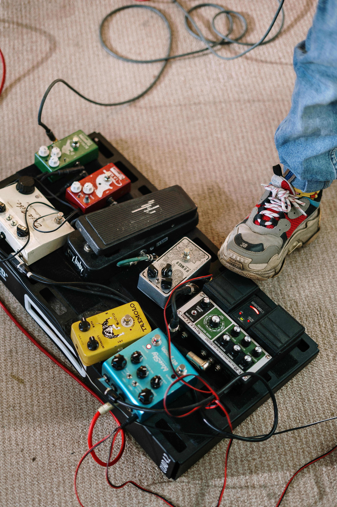

Bonus page [The fool proof method]: The sounds

Congrats, You made it to the end! You are free to grade this project or you can go back and do it all over again. It'll only take a few seconds of your day.